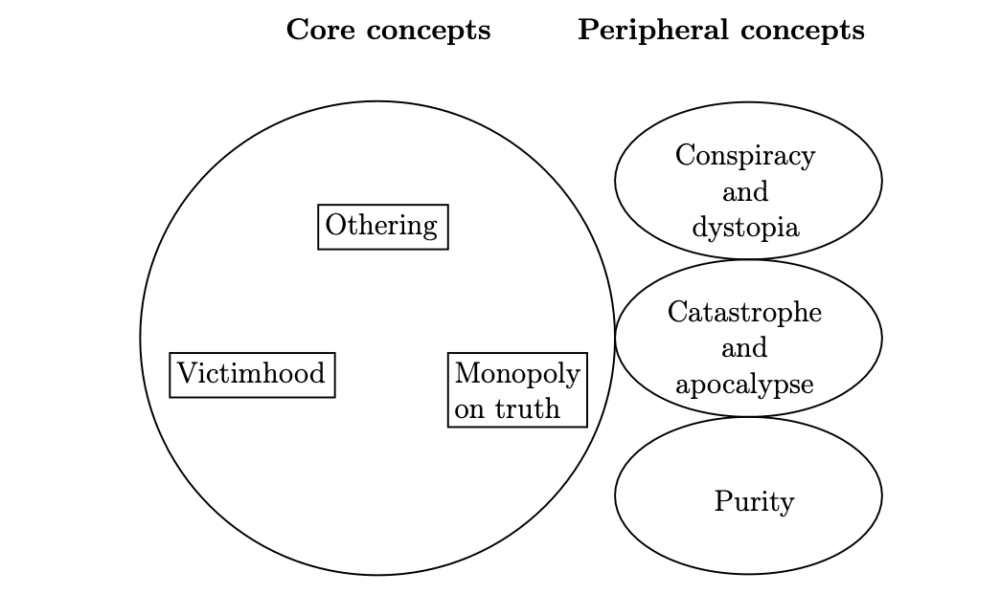
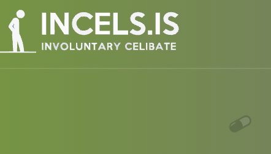
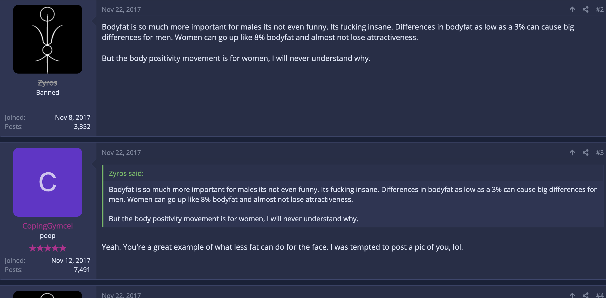
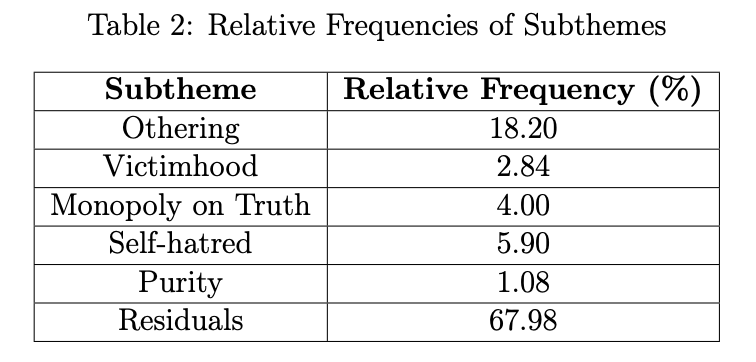
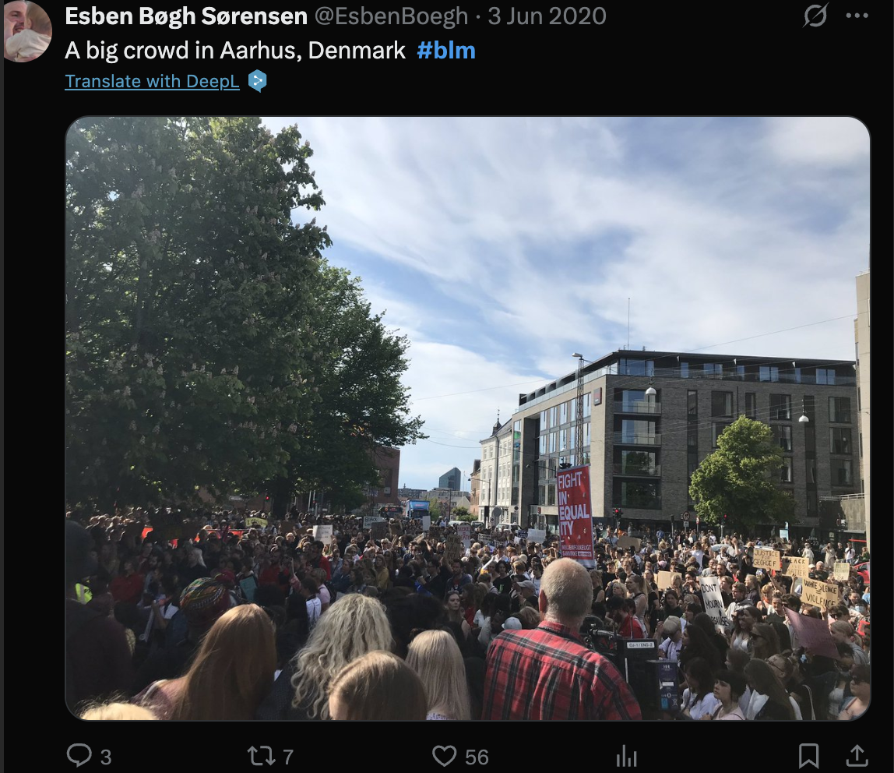
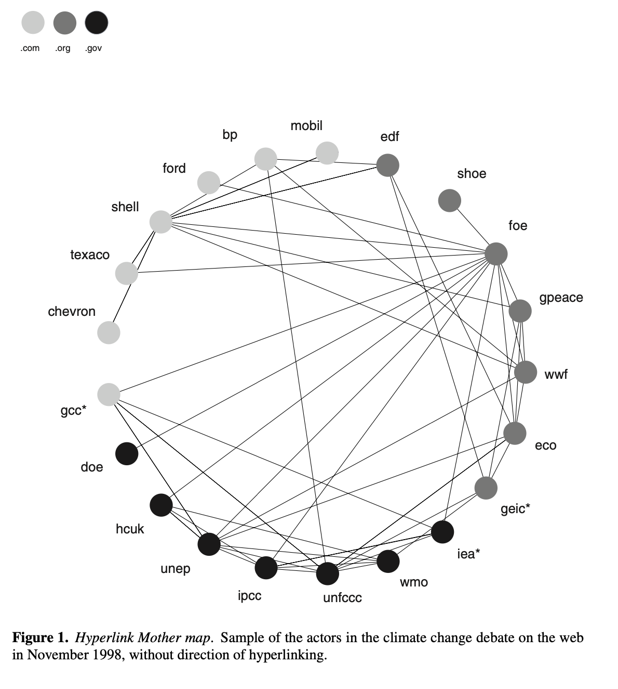
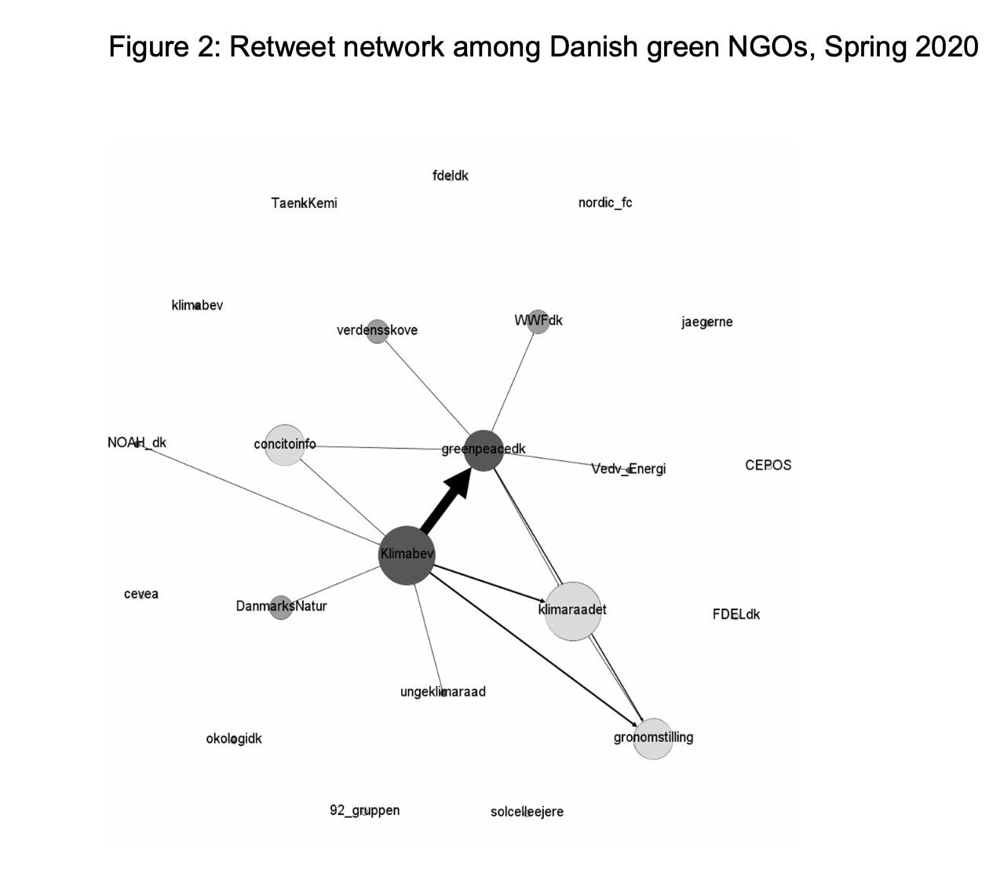
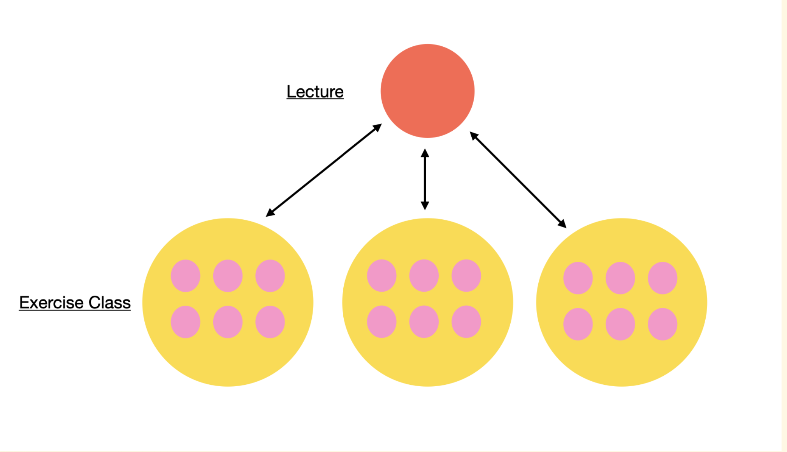

Digital Methods Lecture 1
Lecture 01
This lecture frames the course around one practical idea: how to turn digital traces into a defensible mixed-methods project.
Course responsible: Hjalmar Bang Carlsen, Associate Professor, SODAS
Teaching team
hsl448@sodas.ku.dk
cd@plen.ku.dk
xbk406@sodas.ku.dk
Exercises, milestone feedback, and supervision are built around project development, not just lecture content.
Roadmap
01
Frame the course around the final project.
02
Clarify what counts as digital in data, method, and analysis.
03
Show why digital work often needs both qual and quant moves.
Explain how the course is organized as a research collective that helps projects take shape.
Students collect digital data, answer a self-chosen research question, and combine qualitative and quantitative analysis.
Exam focus
◎
Research design
◌
Netnography
◍
Qualitative text analysis
◐
Simple quantitative analysis
The strongest projects do not place qual and quant side by side. They make them inform each other.
Research question: What tenets in incel culture resemble the structure of extremist ideology?
The point of the example is not the topic itself. It is the design logic connecting question, concept, data, and analysis.



“I am the worst of the worst. I don’t deserve to mate and breed.”
This kind of passage gives interpretive depth that a pattern alone cannot supply.

The object is not “the internet” in general. The object is the traces, rankings, links, metadata, and interactions generated inside specific media environments.
Platforms already sort, rank, recommend, cluster, and connect content.
Digital methods learn from those built-in operations instead of treating them as irrelevant noise.



Quantitative patterns become useful when they are interpreted as medium-specific social formations.
Digital material can be qualitative in form and quantitative in scale.
Projects often need both contextual observation and scalable collection.
Interpretive and statistical work both become weaker when they are isolated from each other.
01
Repurpose and combine qualitative and quantitative digital traces
02
Combine methods such as netnography and web scraping
03
Combine interpretive and analytical forms of computer-assisted analysis
⇄
Make the three layers inform each other
Digital methods use medium-specific operations to study public life, discourse, organization, and social worlds. They do not aim to optimize the platforms themselves.
If a project only collects platform data without asking what those traces mean in context, it stops too early.
The class works as a collective, while exercise groups function as topical clusters made up of smaller independent project teams.

Takeaway
That is the standard the rest of the course will keep returning to.
Digital Methods, Spring 2026